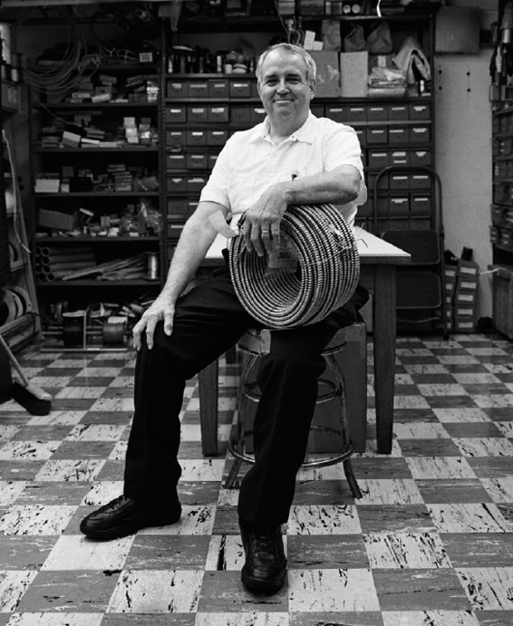

Ông ấy nói mình thức dậy giữa khuya và va vào cửa phòng tắm nhưng chúng tôi chắc chắn là bà ấy đã đập ông bằng một cuốn sách
– Chuyện kể của một gia nhân về cuộc sống trong Nhà Trắng dưới thời Clinton trong thời gian xảy ra vụ tai tiếng Monica Lewinsky.
Máu vương vãi khắp giường tổng thống và đệ nhất phu nhân. Một nhân viên Nhà Trắng sau đó đã nhận được cuộc gọi đầy hoảng loạn của cô hầu phòng khi phát hiện chuyện này. Một ai đó cần đến đó gấp để xem có gì hư hại không.
Đó là máu của ông Bill Clinton. Ngài tổng thống phải khâu lại một số vết thương ở đầu. Ông quả quyết mình bị thương vì va đầu vào cửa phòng tắm lúc nửa đêm. Nhưng không phải ai cũng tin điều đó.
“Chúng tôi chắc chắn là bà ấy đã đập ông ấy bằng một cuốn sách”, một gia nhân nói. chẳng ai biết rõ điều đó hơn các gia nhân, chuyện này xảy ra không lâu sau khi chuyện yêu đương giữa tổng thống với một thực tập sinh Nhà Trắng bị dư luận phanh phui – rõ ràng đây là thời kỳ khủng hoảng hôn nhân của hai vợ chồng Clinton. Và trên chiếc bàn đầu giường lúc đó có ít nhất hai mươi cuốn sách để người vợ bị phản bội tha hồ lựa chọn, trong đó có cả cuốn Kinh Thánh.
Tháng 11 năm 1995, Clinton bắt đầu có quan hệ yêu đương với Monica Lewinsky, một thực tập sinh Nhà Trắng 22 tuổi, ông đã hơn một chục lần quan hệ tình dục với cô trong suốt một năm rưỡi, đa phần là trong Phòng Bầu dục. Khi vụ bê bối bị công khai dư luận sau hơn hai năm kể từ khi bắt đầu, cơn bão truyền thông đã hủy hoại quãng thời gian còn lại của nhiệm kỳ tổng thống của ông. Phát hiện này là thành quả của hơn bốn năm điều tra của công tố viên độc lập Kenneth Starr, người cũng nghiên cứu các cáo buộc khác, trong đó có vụ thỏa thuận đất đai Whitewater và vụ sa thải một số nhân viên làm việc lâu năm cho Phòng Du lịch của Nhà Trắng, một vụ xì–căng–đan được biết dưới tên gọi Travelgate. Mặc dù những người này không phải là những người giúp việc ở tư dinh nhưng Quản lý Skip Allen nói rằng ông nhớ các đồng nghiệp của mình đã đau buồn thế nào sau khi xảy ra việc các nhân viên bị đuổi khỏi Phòng Du lịch. Dù gì thì hầu hết các nhân viên ở tư dinh đều đã cống hiến toàn bộ sự nghiệp của họ cho Nhà Trắng, cho nên một số người bắt đầu thấy bị tổn thương. “Mọi người trong tòa nhà đều hơi căng thẳng vì ai cũng gắn bó với sự nghiệp của mình. Không ai có thể nói trước là nếu tình hình này tiếp diễn, sẽ có bao nhiêu người bị sa thải và ai sẽ bị sa thải”. Cũng giống như giáo viên chính thức, nhân viên chính phủ rất khó bị sa thải, Allen nói, vì thế mọi người đều rất sốc khi thấy những người này bị đuổi ngay tức khắc không một lời giải thích. Vợ chồng Clinton cũng phản bác lại những chỉ trích cho rằng họ sử dụng Phòng ngủ Lincoln để ve vãn các nhà tài trợ giàu có.
Ngày 17 tháng 8 năm 1998, Clinton trở thành vị tổng thống đầu tiên cho lời khai với tư cách là đối tượng điều tra của đại bồi thẩm đoàn. Tổ trưởng Tổ Điện Bill Cliber, người giúp bố trí đường dây điện cho việc lấy lời khai kéo dài 4 tiếng rưỡi của ông Clinton – thực hiện qua camera giám sát – cho biết ngày hôm đó tổng thống “có tâm trạng rất tệ”. Đến tối hôm đó, Clinton thừa nhận “mối quan hệ không thích hợp” với Lewinsky trên chương trình truyền hình toàn quốc. Bốn tháng sau, tức tháng 12, Hạ viện do phe Cộng hòa kiểm soát bỏ phiếu buộc tội ông, tuy nhiên sau đó ông được tha bổng sau phiên xét xử kéo dài 5 tuần ở Thượng viện.
Công chúng không hề biết gì về Monica Lewinsky cho đến tháng 1 năm 1998. Nhưng một số người giúp việc trong dinh thì đã biết về câu chuyện tình ái này trong suốt thời gian nó diễn ra từ tháng 11 năm 1995 đến tháng 3 năm 1997. Các nhân viên phục vụ từng nhìn thấy tổng thống và Lewinsky trong rạp chiếu phim gia đình, và hai người họ cũng thường xuyên được thấy bên cạnh nhau, đến mức các nhân viên bắt đầu nói cho nhau nghe mỗi khi nhìn thấy Lewinsky. Là những người gần gũi với gia đình tổng thống, các nhân viên phục vụ thường rất sốt sắng giữ kín những bí mật kiểu này, nhưng thỉnh thoảng họ cũng vẫn chia sẻ các mẩu chuyện nhỏ với đồng nghiệp – bởi thông tin này có thể có ích cho người đó, hay chỉ vì thỉnh thoảng họ cũng muốn chứng tỏ mình là người biết chuyện.
Một nhân viên đề nghị giấu tên nhớ là lúc cô đang đứng ở hành lang chính phía sau bếp, nơi các trợ lý khu Cánh Đông và khu Cánh Tây thường hay qua lại, thì đột nhiên một người phục vụ thúc nhẹ vào người cô và thì thào khi nhìn thấy Lewinsky đi ngang qua: “Cô đó đó, bạn gái ổng đó. Đúng là cô ta. Cô ta là người trong phòng chiếu phim tối hôm trước”.
Gần hai thập niên sau, nhiều nhân viên giúp việc trong dinh vẫn còn tỏ ra thận trọng khi nói về cuộc chiến mà họ chứng kiến giữa hai vợ chồng Clinton. Nhưng tất cả mọi người đều cảm nhận được bầu không khí ảm đạm bao trùm tầng hai và tầng ba khi câu chuyện này kéo dài suốt năm 1998.
Các nhân viên tư dinh chứng kiến hậu quả tồi tệ của câu chuyện tình này và ảnh hưởng nặng nề của nó lên bà Hillary Clinton, nhưng các trợ lý khu Cánh Tây cũng đã từ lâu nghi ngờ về vở kịch đang diễn ra trên tầng hai của tòa hành pháp. “Bà ấy hẳn đã đập chồng bằng một cái chảo nếu có ai đó đưa chảo cho bà ấy”, Susan Thomases, bạn thân đồng thời cũng là cố vấn chính trị của bà Hillary đã nói thế khi được Trung tâm Miller của Đại học Virginia phỏng vấn nhằm phục vụ việc sưu tập các câu chuyện lịch sử truyền miệng để làm tư liệu về nhiệm kỳ tổng thống của Bill Clinton. “Theo tôi thì bà ấy chưa bao giờ nghĩ đến chuyện rời xa hay ly dị ông ấy”.
Betty Finney, hiện đã 78 tuổi, bắt đầu làm hầu phòng trong Nhà Trắng năm 1993. Phần lớn thời gian, bà làm việc ở khu nhà ở của gia đình tổng thống và nhớ rõ mọi thứ đã thay đổi thế nào trong những năm cuối cùng. “Mọi chuyện trở nên căng thẳng hơn. Tôi thấy buồn cho cả gia đình họ và cho những gì họ trải qua lúc đó”, bà nói. “Ta có thể cảm nhận được nỗi buồn. Không còn nhiều tiếng cười như trước”.
Nhân viên cắm hoa Bob Scanlan ít thận trọng hơn khi nói về bầu không khí ở đây: “Tầng hai trông chẳng khác gì nhà xác khi ta lên đó. Không ai nhìn thấy Phu nhân Clinton đâu cả”.
Sự yên ắng kỳ lạ trong tòa nhà chỉ bị phá vỡ để nhường chỗ cho những cảnh kích thích sự hiếu kỳ cùng những màn khẩu chiến ác liệt. Một chuyện đã xảy ra quãng gần Giáng sinh 1996, khi chuyện tình của Tổng thống và Lewinsky đang tiếp diễn.
Bộ phận Phòng lúc đó đang làm công việc thường lệ của mình là gói quà cho đệ nhất gia đình. Đôi khi họ được yêu cầu gói hơn bốn trăm phần quà cho bạn bè, người thân và nhân viên của đệ nhất gia đình. Bắt đầu từ dưới thời Reagan (khi mọi thứ đặc biệt đòi hỏi phải thật đúng chuẩn), gói quà là một công việc rất công phu khi mọi thông tin chi tiết về từng món quà đều phải được ghi sổ cẩn thận (Những sổ này đều bị hủy mỗi khi có gia đình mới dọn vào). Những nhân viên gói quà phải luôn đính kèm một nhãn quà tặng (gift tag) ghi rõ bên trong là thứ gì, và kín đáo nhét nó dưới dải ruy–băng. Sau đó họ đặt những gói quà đó lên một chiếc bàn định sẵn trong Phòng khách Tây hay Phòng Bầu dục Vàng.
Mùa lễ năm đó, một gia nhân nhớ mình đã chú ý đến một món quà khác thường mà cô được yêu cầu gói: đó là tập thơ Leaves of Grass của Walt Whitman. Sau đó cô đặt cuốn sách đã gói lên bàn và không còn nghĩ đến nó nữa. Vài tháng sau, vào tháng 2 năm 1997, tổng thống tặng Lewinsky một món quà. Đó là cuốn Leaves of Grass. Mãi sau này, người gia nhân đó mới biết món quà mà cô đã gói có nhiều khả năng là cuốn sách tặng người tình của tổng thống.
Cũng theo người gia nhân này, sau mùa lễ, có một ngày tổng thống rất muốn lấy một cuốn sách trong phòng ngủ hai vợ chồng ra, nhưng lúc đó vì đệ nhất phu nhân chưa thay đồ nên không ai muốn quấy rầy bà. “Betty Currie [thư ký tổng thống] gọi cho người hầu riêng của tổng thống và bảo cậu ta đến nhờ tôi vào đó lấy cuốn sách, nhưng tôi dứt khoát nói không”, người gia nhân nhớ lại. (Khi cửa phòng của vợ chồng tổng thống đóng kín, điều đó đồng nghĩa với câu XIN ĐỪNG QUẤY RẦY thường treo ngoài cửa phòng khách sạn). “Cuối cùng, tôi nghĩ Betty Currie đã gọi điện trực tiếp cho bà Clinton”.
Một lát sau, một cuốn sách từ phòng ngủ bay vèo ra ngoài. Bà Hillary đã ném nó ra ngoài hành lang. Cậu người hầu của Tổng thống nhặt nó lên và đem đến cho Currie, chẳng biết cuốn sách đệ nhất phu nhân ném ra khỏi phòng có phải là cuốn sách tổng thống tặng cho Lewinsky không, nhưng người gia nhân nhớ là bầu không khí lúc đó vô cùng căng thẳng.
Nhân viên cắm hoa Ronn Payne nhớ có một ngày, khi ông lên trên lầu bằng thang máy cùng chiếc xe đẩy để đưa các bình hoa cũ xuống nhà thì nhìn thấy hai nhân viên phục vụ đứng ngoài hành lang Phòng khách Tây lắng tai nghe vợ chồng Clinton cãi nhau kịch liệt bên trong. Họ ra dấu cho ông lại gần và đặt ngón tay lên môi, kêu ông im lặng. Payne bất chợt nghe tiếng đệ nhất phu nhân gào lên “Đồ khốn!” với tổng thống, rồi ông nghe tiếng một vật nặng ném qua góc phòng bên kia. Các nhân viên đồn rằng bà ném một cái đèn. Các nhân viên phục vụ sau đó được sai dọn dẹp mớ lộn xộn này, Payne nói. Trong một lần trả lời phỏng vấn với Barbara Walters, bà Clinton đã làm sáng tỏ câu chuyện mà ngay sau đó được đưa vào mục lượm lặt. “Tôi nhắm khá tốt”, bà nói. “Tôi mà ném một cái đèn vào ai đó thì chắc cô cũng biết chuyện gì xảy ra rồi”.
Payne không ngạc nhiên trước cơn giận dữ đó. “Ta nghe thấy rất nhiều lời lẽ thô tục trong Nhà Trắng dưới thời Clinton”, ông nói. “Khi ta là người giúp việc cho một ai đó, chắc chắn ta biết chuyện gì đang xảy ra trong nhà”.
Trong thời gian làm việc ở Nhà Trắng, Payne có kết quả xét nghiệm HIV dương tính và có sức khỏe rất yếu, có thời điểm ông sụt đến 20 ký. Ông muốn xin nghỉ phép một thời gian nhưng được bảo phải lựa chọn giữa hai phương án là nghỉ làm hoặc về hưu. Và ông đã chọn về hưu non. Ông hy vọng mình có thể quay lại làm việc sau khi khỏe trở lại vì theo lời ông, một số nhân viên nghỉ hưu sau đó vẫn quay lại làm việc. “Chắc cô cũng hình dung được là lúc đó tôi trông như thế nào. Tôi biết họ không muốn tôi lên lầu”, ông nói. “Tôi muốn phục hồi sức khỏe và cân nặng của mình”. Tuy nhiên, lúc ông thấy mình có thể làm việc trở lại thì lại được bảo rằng ông không thể quay lại vì ông về hưu theo chế độ bệnh tật. Ông không bao giờ được nói rõ mình bị sa thải vì dương tính với HIV và cũng không biết ai đứng sau quyết định này – gần như chắc chắn là chuyện này không được thông báo cho gia đình Clinton – nhưng ông không chính thức phản đối chuyện này. Từ vài năm nay, ngay cả dưới thời các chính quyền trước, việc các nhân viên mắc HIV không được phép tiếp xúc với đệ nhất gia đình đã trở thành nguyên tắc bất di bất dịch. “Tôi chứng kiến cảnh họ gây rất nhiều khó dễ cho các nhân viên dương tính với HIV”, Payne nói. “Một số người bị buộc làm việc ở phòng giặt dưới tầng hầm. Một số khác bị đưa ra ngoài cắt cỏ”. Vả lại, phòng nào trong tòa hành pháp cũng có mặt nhân viên cắm hoa, kể cả các phòng ngủ của gia đình tổng thống, vì thế Payne khó lòng được quay lại công việc cũ. Ông đau lòng khi thấy sự nghiệp ở Nhà Trắng của mình kết thúc đau đớn như thế, và được rất nhiều đồng nghiệp ở lại nhớ tiếc.
TRONG THỜI GIAN thảm kịch lên cao trào, bà Hillary thường xuyên bỏ các cuộc hẹn trưa với các nhân viên. Điều hành tòa hành pháp lúc này không quan trọng bằng việc cứu vãn cái ghế tổng thống và cuộc hôn nhân của họ. Suốt ba, bốn tháng năm 1998, tổng thống phải ngủ trên ghế sofa trong phòng làm việc riêng ở sát cạnh phòng ngủ của hai vợ chồng họ ở tầng hai. Đa số các nhân viên nữ trong dinh đều nghĩ ông ấy bị thế là đáng đời.
Ngay cả Phục vụ James Ramsey, người tự xưng là tay sát gái, cũng đỏ mặt khi đề tài này được nêu lên. Ông nói Clinton là “bạn thân của tôi, nhưng mà... thôi nào”. Như thường lệ, trong suốt thời gian nổ ra vụ tai tiếng Lewinsky, Ramsey nói ông không hé môi nói nửa lời.
Một số nhân viên nói rằng bà Hillary đã biết chuyện Lewinsky từ lâu, trước khi chuyện này bị lộ ra, nhưng điều khiến bà thực sự đau khổ không phải là việc chồng bà ngoại tình mà là vì chuyện này bị phát hiện kéo theo sự cắn xé của giới truyền thông.
Những tháng khó khăn đó, đệ nhất phu nhân rất dễ nổi nóng. Ông James Hall nhớ lúc ông đang phục vụ trà và cà phê trong Phòng Lam cho bữa tiệc chiêu đãi một lãnh đạo nước ngoài thì đột nhiên đệ nhất phu nhân tiến đến chỗ ông đang đứng phía sau quầy bar.
“Ông đang mơ mộng gì đó?”, bà la ông. “Tôi phải cầm hộ tách cho vợ thủ tướng đây này... Bà ấy uống xong và nhìn quanh xem có chỗ nào đặt tách không”. Hall lặng người. Ngoài kia các nhân viên phục vụ khác đang mang khay thu gom đồ uống, còn công việc của ông chỉ là phục vụ đồ uống mà thôi. Nhưng ông biết lúc này ông có tự bào chữa cũng vô ích. Bà Clinton than phiền chuyện này với Phòng Quản lý và Hall không được gọi trở lại làm việc suốt một tháng trời.
“Làm việc ở đó trong thời gian xảy ra vụ cáo buộc không đến nỗi tệ”, cựu Quản lý kho Bill Hamilton nói, nhưng ông đồng ý rằng làm việc với phu nhân Clinton trong những tháng khó khăn này là một thách thức lớn. “Chuyện này quá khó khăn với bà ấy nên hễ ai nói gì ra cũng đều bị bà ấy nạt”, Hamilton lắc đầu nhớ lại. Nhưng ông nói mình vẫn thích làm việc cho gia đình Clinton, và mặc dù ông đã nghỉ hưu năm 2013 nhưng đôi lúc ông vẫn ước mình ở lại Nhà Trắng, biết rằng có ngày bà Hillary Clinton có thể sẽ quay về trên cương vị nữ tổng thống đầu tiên của Hoa Kỳ. Ông nói ông rất muốn làm việc cho bà một lần nữa ngay cả sau 8 năm đầy xáo động của bà ở Nhà Trắng.
Ông hoàn toàn thông cảm với đệ nhất phu nhân trong những ngày u ám đó. “Điều đó đã xảy ra, và bà ấy biết là nó xảy ra và tất cả mọi người đang nhìn vào bà”, ông Hamilton nói.
Quản bếp bánh ngọt Roland Mesnier nói ông muốn giúp bà Hillary thấy đỡ hơn bằng bất cứ cách nào. Món tráng miệng ưa thích nhất của bà là món bánh kem moka, và khi vụ xì–căng–đan đang trong cao trào, ông nhớ là “tôi đã làm rất nhiều bánh kem moka, tin tôi đi”, chiều đến, bà Hillary thường gọi điện cho Phòng Bánh ngọt. Bằng một giọng nhỏ nhẹ khiêm tốn, khác với giọng nói bình thường vẫn mạnh mẽ và tự tin của bà, Hillary hỏi: “Roland, tối nay ông cho tôi xin một cái bánh kem moka được không?”
Vào một ngày cuối tuần đẹp trời của tháng 8 năm 1998, ngay trước khi tổng thống thú nhận tội lỗi với cả nước, đệ nhất phu nhân gọi điện xuống cho Quản lý Worthington White để yêu cầu một chuyện khác thường.
“Ông Worthington, tôi muốn ra hồ bơi nhưng không muốn nhìn thấy ai khác ngoài ông”, bà nói.
“Vâng, thưa phu nhân, tôi hiểu rồi”, ông trả lời với giọng cảm thông.
White biết chính xác bà muốn nói gì. Bà không muốn nhìn thấy người nhân viên mật vụ vẫn đi theo bảo vệ bà, không muốn nhìn thấy những người chăm nom khuôn viên rộng lớn ở Nhà Trắng, và chắc chắn là cũng không muốn nhìn thấy bất cứ khách tham quan nào ở Cánh Tây. “Bà không đủ sức chịu đựng chuyện đó”, ông nhớ lại. Bà chỉ muốn yên tĩnh vài tiếng đồng hồ.
White nói với bà rằng ông cần 5 phút để giải tỏa hiện trường, ông chạy đi tìm người chỉ huy nhân viên mật vụ và đề nghị hai bên hợp tác giải quyết việc này. Và nhất là phải nhanh.
“Cuộc nói chuyện chỉ kéo dài 20 giây nhưng tôi biết bà ấy muốn nói gì. ‘Nếu có ai nhìn thấy bà ấy hay bà ấy nhìn thấy ai thì tôi sẽ bị đuổi, tôi biết điều đó’”, ông nói với người nhân viên mật vụ. “‘Và anh cũng có thể bị đuổi’”.
Thế là những nhân viên mật vụ được phân công bảo vệ đệ nhất phu nhân đồng ý đi theo bà một cách kín đáo, mặc dù theo quy định thì phải có một người đi trước và một người đi sau bà.
“Bà ấy sẽ không quay lại tìm các anh đâu”, White nói với họ. “Bà ấy chỉ là không muốn thấy mặt các anh, cũng không muốn các anh nhìn mặt bà ấy”.
Ông đón bà Clinton ở thang máy và hộ tống bà đến hồ bơi, sau lưng là các nhân viên mật vụ, ngoài ra không còn ai khác. Bà đeo kính đọc sách gọng đỏ và cầm theo vài cuốn sách. Bà không trang điểm, cũng không làm tóc. Với White, bà trông rất đau khổ.
Trên đường đến hồ bơi, không ai nói với ai lời nào.
“Thưa phu nhân, bà có cần đến nhân viên phục vụ không?” White hỏi sau khi bà Clinton ngồi vào ghế.
“Không”.
“Bà có cần gì không?”
“Không, chỉ là hôm nay đẹp trời nên tôi muốn ngồi đây tận hưởng chút ánh nắng thôi, chừng nào xong, tôi sẽ gọi ông”.
“Vâng, thưa phu nhân”, White đáp. “Bây giờ là 12 giờ. Tôi sẽ đi khỏi đây lúc 1 giờ và một người khác sẽ đến thay tôi”.
Bà Clinton nhìn ông chăm chăm. “Tôi sẽ gọi ông khi nào tôi xong”.
“Vâng, thưa phu nhân”, White trả lời, hiểu rằng bà muốn ông ở lại cho đến khi bà quyết định rời khỏi chỗ đó. Chỉ đến gần 3 giờ rưỡi trưa, White mới nhận được cuộc gọi của bà. ông quay lại và lặng lẽ cùng đệ nhất phu nhân đi từ hồ bơi về tầng hai. Trước khi ra khỏi thang máy, đệ nhất phu nhân cho ông biết là những nỗ lực của ông có ý nghĩa thế nào với bà.
“Bà ấy nắm tay tôi bóp nhẹ và nhìn thẳng vào mắt tôi nói ‘Cảm ơn ông’”.
“Điều đó làm tôi xúc động”, White nói về lòng biết ơn của bà Clinton. “Điều đó có ý nghĩa rất lớn đối với tôi”.
Một vài nhân viên trong Nhà Trắng thậm chí còn bị lôi vào tấn thảm kịch đã bị lột trần. Có lúc, nhân viên quét dọn Linsey Little bị gọi lên tầng hai để trả lời các câu hỏi liên quan đến chuyện ngoại tình của tổng thống. Người gặp anh trên lầu là một nhân viên liên bang trông rất đáng sợ. Ông ta hỏi anh đã từng nhìn thấy cô Lewinsky trước đây chưa. Chưa, anh trả lời với giọng lo lắng.
“Họ muốn làm ta cảm thấy như họ biết ta biết chuyện gì đó”, anh nói. Anh nhất quyết nói mình chưa bao giờ nhìn thấy chuyện gì không hay, nhưng dù có thấy thì anh cũng không muốn mất việc và thấy tên mình xuất hiện trên báo. “Tên ta sẽ bị rêu rao trên khắp các phương tiện truyền thông”, anh nói.
Mesnier mô tả năm 1998 như là một “khoảng thời gian rất buồn” khi nhìn thấy hai con người tài năng bị vụ xì–căng–đan hủy hoại. Và giống như nhiều gia nhân khác, ông thấy chuyện này thật quá khủng khiếp với Chelsea, con gái nhà Clinton.
Trong một bức ảnh chụp ngày 18 tháng 8 năm 1998, một ngày sau khi cha cô thú nhận tội lỗi, Chelsea nắm tay cha mẹ tiến về chỗ chiếc trực thăng đậu ở Bãi cỏ phía nam. Mesnier lắc đầu khi nghĩ đến những gì cô gái trẻ đã trải qua. “Chelsea là cô gái duyên dáng nhất tôi từng gặp và rồi ta phải chứng kiến họ trải qua một việc ngớ ngẩn như thế này. Thật ngớ ngẩn. Thời gian đó quả thật rất gay go”.
QUẢN LÝ SKIP Allen thừa nhận rằng phục vụ cho những gia đình mình thích dễ hơn là giả vờ thích họ.
“Nhưng chúng tôi giả vờ rất giỏi”, ông nói.
Allen không giấu được sự e dè của ông đối với gia đình Clinton. Trong lúc ăn trưa bên bể bơi của căn nhà rộng lớn của ông ở vùng nông thôn Pennsylvania, ông nhớ lại chuyện bà Clinton luôn nhờ ông giúp bà thắt nơ trên áo vì bà không thể tự làm. Nhưng ông nói gia đình Clinton không bao giờ tin tưởng hoàn toàn vào các nhân viên và đặc biệt là hay nghi ngờ Phòng Quản lý. “Họ là những người hoang tưởng nhất tôi từng gặp”.
Allen không phải là người duy nhất có hồi ức cay đắng về Nhà Trắng dưới thời Clinton. Quản lý Chris Emery, một người rất thân với gia đình Bush, cũng cảm thấy mình bị vợ chồng Clinton xét nét quá đáng. Ông nói trong quãng thời gian 14 tháng hầu hạ họ, ông đã bị xét nghiệm ma túy đến ba lần và bị kiểm tra lại lý lịch mặc dù phải mấy năm nữa ông mới đến hạn kiểm tra lại. Ông cho biết một số câu hỏi đặt ra cho ông – bao gồm cả việc ông theo giáo phái nào – hoàn toàn mang tính cá nhân nên ông từ chối trả lời. “Tôi nghĩ họ đang cố bới lông tìm vết để dễ sa thải tôi”. Ông thở dài. Và quả thật, khi Emery bị đuổi khỏi Nhà Trắng năm 1994, nguyên nhân một phần là do ông đã giúp cựu Đệ nhất Phu nhân Barbara Bush làm một việc gì đó”.
Dưới thời Tổng thống Bush thứ nhất, Emery đã giúp đỡ bà Bush rất nhiều. “Chúng tôi rất thân thiết. Chris dạy tôi cách sử dụng máy vi tính”, bà nói với tôi. Sau khi rời Nhà Trắng, trong lúc viết hồi ký, bà làm mất một chương nên gọi điện cho Emery nhờ ông giúp. Emery rất vui vì được giúp bà, nhưng điều này lại khiến gia đình Clinton nghi ngờ ông quá gắn bó với gia đình Bush. Emery cho biết khi gia đình Clinton nhìn thấy danh sách cuộc gọi của ông, họ “đi đến kết luận rằng tôi tiết lộ các bí mật với ý đồ đen tối cho gia đình Bush ở Houston, điều mà tôi không hề làm”.
Ít lâu sau, Tổng Quản lý Gary Walters gọi Emery vào phòng ông và nói: “Bà Clinton không thoải mái với anh”.
“Ông nói vậy nghĩa là sao?”, Emery hỏi với giọng sửng sốt.
“Có nghĩa là ngày mai sẽ là ngày cuối của anh”.
Barbara Bush thừa nhận là những cuộc gọi của bà “đã gây rắc rối” cho Chris. Emery bị Neel Lattimore, phát ngôn viên của bà Hillary, trách mắng trước mặt mọi người vì tội “thiếu kín đáo”, “chúng tôi tin rằng vị trí hiện ông ấy đang có, trên cương vị một nhân viên Nhà Trắng, buộc ông ấy phải hết sức tôn trọng sự riêng tư của gia đình tổng thống”.
Emery cho biết ông đã ngã quỵ vì bị mất việc cùng với mức lương 50.000 đô la. “Tôi nghỉ việc một năm”, ông nói. “Họ đạp đổ chén cơm của tôi. Tôi tự hỏi không biết họ sẽ làm gì với ai đó thực sự có thế lực”. Tối hôm đó khi ông về nhà, cuộc gọi đầu tiên mà ông nhận được là từ người trợ lý của bà Barbara Bush, nói rằng vợ chồng nhà Bush đã nghe tin này và họ muốn làm mọi cách có thể để giúp đỡ ông. “Cuộc gọi kế tiếp là từ văn phòng của Maggie Williams, chánh văn phòng của bà Hillary Clinton, nói rằng nếu tôi nhận được cuộc gọi nào từ báo giới, tôi phải nói họ gọi lại cho Nhà Trắng. Lúc đó tôi lập tức nghĩ ‘Đương nhiên, đây là điều chúng tôi vẫn luôn làm’. Đến khi gác điện thoại rồi, tôi mới nhớ ra là ‘Đợi đã. Họ vừa đuổi mình mà’”.
Nhiều năm sau, Emery buồn bã nói với tôi rằng ông hiểu vì sao mình bị đuổi. “Bà ấy đang đối mặt với quá nhiều áp lực”, ông nói về bà Clinton, “và tôi xui xẻo trở thành nạn nhân của bà”.
Nhưng ít nhất cũng có một cựu đồng nghiệp của Emery tỏ ra không đồng tình với những gì ông tuyên bố. Người nhân viên yêu cầu không nêu danh tính này nói rằng gia đình Clinton có lý khi nghi ngờ các nhân viên bởi nhiều người trong số họ đã từng phục vụ cho các tổng thống thuộc Đảng Cộng hòa đến 12 năm. Theo người này, “tất cả mọi người trong Phòng Quản lý đều đau buồn khi ông Bush, tổng thống thứ bốn mươi mốt của Hoa Kỳ không tái đắc cử... và họ bộc lộ sự đau buồn đó ngay trước mặt vợ chồng Clinton”. Cũng theo người này, Emery đặc biệt lại là “một người Cộng hòa từ chân tơ đến kẽ tóc” và bản thân ông cũng nói rằng lẽ ra ông đã theo vợ chồng Reagan đi California sau khi họ rời nhiệm sở nếu như được họ yêu cầu.
Emery không phải lúc nào cũng giấu cảm xúc của mình trước mặt gia đình Clinton. Theo người đồng nghiệp này, có một ngày khi Tổng thống Clinton vừa từ trên tầng hai xuống để đi dự một sự kiện, Emery đã nói thế này: “Tôi không hiểu tại sao mọi người lại sung sướng đến vậy khi ông ta ở đó”, ông ta nói câu này đủ lớn để các trợ lý của Clinton nghe, người đồng nghiệp nói.
Hai vợ chồng Clinton cũng có lý do để lo lắng về đội cận vệ của họ. Họ vẫn còn choáng với việc các cảnh sát bang Arkansas, được chỉ định bảo vệ Thống đốc Clinton trước đây, tiết lộ với báo giới rằng họ đã giúp tạo điều kiện thuận lợi cho ngài thống đốc ngoại tình trong những vụ sau này được biết đến dưới tên gọi là “Troopergate”.
Có một việc khiến gia đình Clinton đặc biệt lo lắng. Một đêm năm 1994, khi họ đang mừng lễ Phục sinh ở Trại David thì trên tầng ba của Nhà Trắng, cô Helen Dickey, trước đây từng là bảo mẫu của Chelsea và nay là trợ lý nhân viên, đột nhiên nghe thấy tiếng động phát ra từ khu nhà ở của gia đình tổng thống ở tầng dưới. Khi cô chạy xuống nhà xem chuyện gì xảy ra, cô nhìn thấy một toán người mặc đồ đen và mang vũ khí đang lục lạo đồ đạc của gia đình Clinton.
“Các anh làm gì đó? Các anh không có quyền đến đây”, cô la lên.
“Chúng tôi là nhân viên mật vụ đang làm nhiệm vụ. Ra ngoài!” Họ bảo cô.
Khi Hillary quay về, bà yêu cầu Tổng Quản lý Gary Walters giải thích rõ chuyện này. Ông xin lỗi vì đã quên không nói cho bà biết rằng các nhân viên mật vụ đến rà soát tầng hai để xem có thiết bị nghe lén không. Bà Hillary giận điên lên.
Gia đình Clinton rất yêu quý quãng thời gian họ được ở một mình với nhau. Trong cuộc phỏng vấn năm 1993, bà Hillary Clinton nói rằng bà rất thích tầng hai của Nhà Trắng bởi đó là nơi duy nhất mà bên mật vụ không bám theo gia đình bà. “Chúng tôi có thể bảo những người giúp việc toàn thời gian này xuống dưới nhà. Chúng tôi không cần họ có mặt trên đó”, bà nói. “Cảm giác này thật tuyệt bởi ở bất kỳ nơi nào khác, chúng tôi cũng đều bị họ vây quanh”.
Theo lời nhiều người, Chelsea Clinton đối với các nhân viên rất cung kính. Tuy nhiên Ronn Payne tin rằng cô cũng phần nào bị nhiễm cái thói ghét Cơ quan Mật vụ của bố mẹ mình. Ngay từ khi Clinton bắt đầu lên nắm chính quyền, các nhân viên mật vụ đã đóng chốt ở chân cầu thang tầng hai, ngay bên cạnh thang máy dành cho tổng thống. Một vị trí cắm chốt khác của Cơ quan Mật vụ là ở ngay trên đầu cầu thang Grand Staircase đối diện Phòng Hiệp ước ở tầng hai. (Các vị trí cắm chốt này sau đó được dời xuống tầng Khánh tiết theo yêu cầu của vợ chồng Clinton).
Một ngày kia, Payne kể, khi ông đang đi ngang qua căn bếp riêng ở tầng hai thì một nhân viên mật vụ cũng đi theo sau ông để chờ hộ tống Chelsea đến Sidwell Friends, ngôi trường tư mà cô đang theo học ở tây bắc Washington. Lúc đó Chelsea đang nói điện thoại.
“Ồ, tớ phải đi rồi”, cô nói với bạn. “Lũ lợn đang ở đây”.
Người nhân viên mật vụ giận tím cả mặt, Payne nhớ lại. “Cô Clinton, tôi muốn nói với cô điều này. Công việc của tôi là đứng chắn giữa cô, gia đình cô và một viên đạn. Cô hiểu chứ?”
“À, đó là tên mà bố mẹ tôi đặt cho các anh đó mà”, cô trả lời.
ÔNG GÁC CỬA Preston Bruce nói rằng ông có dự cảm là hai trong số những trợ lý thân cận nhất của Richard Nixon sẽ có ngày phản bội tổng thống. Lúc đó là tháng 11 năm 1968 và Bruce đã gác cửa cho Nhà Trắng được 15 năm. Ông biết có điều bất thường xảy ra khi ba hoặc bốn ngày sau khi ông Richard Nixon được bầu làm tổng thống, một trợ lý chính trị liên tục xuất hiện ở Nhà Trắng. “Tôi nghe người đàn ông này hỏi thăm từng chi tiết nhỏ về cách mọi thứ được điều hành nơi đây”, Bruce nói. “Dường như không có chi tiết nào là quá nhỏ để thoát khỏi sự tò mò của anh ta”.
Người đàn ông này là John Ehrlichman, cố vấn của Nixon kiêm trợ lý nội vụ. Ehrlichman đặt câu hỏi dồn dập cho Tổng Quản lý J.B. West trong lúc ông đưa anh ta đi tham quan dinh thự.
Bruce chưa bao giờ thấy chuyện gì như thế. “Nhân viên chúng tôi biết cách giữ an toàn cho các gia đình tổng thống và giúp họ thấy thoải mái. Đó là nhiệm vụ của chúng tôi. Nhưng còn anh chàng này thì đang toan tính chuyện gì đây?”
Mặc dù Bruce bị mê hoặc bởi việc gia đình Nixon chịu khó bỏ thời gian để biết tên của từng người – có tám mươi nhân viên cả thảy – nhưng ông rất ghét cái cách mà Ehrlichman và người chánh văn phòng mới nhậm chức của Nixon là H.R. “Bob” đối xử với ông. “Dù đã đi thang máy cả trăm lần rồi nhưng lần nào cần đi thang máy, họ cũng chỉ nói cộc lốc mỗi một câu ‘cho tôi lên tầng hai’ mà không kèm theo bất cứ câu ‘Ông vui lòng’ hay lời cảm ơn nào. Họ nhìn xuyên qua tôi như thể tôi là người vô hình”.
Trong khi Nixon dễ dàng cười đùa với Bruce thì Haldeman chỉ làm những việc để mọi người thấy rõ là các nhân viên trong tư dinh chỉ là những người giúp việc không hơn không kém. Văn phòng của anh ta gởi một thông báo cho các nhân viên nói rằng bất cứ nhân viên nào nhờ vả hoặc hỏi xin một tấm ảnh có chữ ký của tổng thống hay ai khác trong gia đình tổng thống sẽ bị đuổi ngay tức khắc. “Tất cả chúng tôi đều thấy đây là trò ti tiện”, Bruce nói. “Chúng tôi biết làm nhiều thứ hay hơn là đến gần tổng thống xin xỏ”.
Haldeman không muốn bất cứ ai đứng ngoài hành lang trước Phòng Quốc yến trong lúc diễn ra bữa tiệc, kể cả các nhân viên mật vụ. Việc lắng nghe mọi người bên trong nâng cốc chúc mừng nhau từ ngoài hành lang từng là truyền thống và niềm vui riêng của các nhân viên phục vụ.
“Có cái gì đó ở Haldeman và Ehrlichman mà khi nhìn họ, ta biết rằng họ sẽ không bao giờ kính trọng một người như ta”, phục vụ Herman Thompson nói.
Hầu hết các cố vấn tổng thống đều chỉ muốn che chở cho tổng thống chứ không muốn dính dáng tới các chi tiết liên quan đến việc điều hành tòa nhà. “Nhưng ngay cả khi chúng tôi đang bày bàn, chúng tôi cũng thấy Halderman và Ehrlichman đi ngang qua”, Thompson vừa nói vừa lắc đầu chán ngán. “Nhìn điệu bộ của họ, ai cũng tưởng họ mới là người phụ trách mọi thứ”.
Trước vụ Watergate, Tổng thống Nixon rất được các nhân viên yêu quý mặc dù hầu hết mọi người đều đồng ý rằng ông và gia đình ông khách sáo và kém tự nhiên hơn những người tiền nhiệm của ông rất nhiều. Bếp trưởng Frank Ruta kể một câu chuyện về nhân viên rửa nồi niêu Franki Blair, một người Mỹ gốc Phi rất thân thiện lúc nào cũng ở dính trong nhà bếp. Một buổi tối, Blair đang rửa nồi niêu sau bữa ăn tối của đệ nhất gia đình thì Tổng thống Nixon thơ thẩn bước vào căn bếp trên lầu và không biết làm cách nào mà họ bắt đầu nói chuyện về bowling. Nixon mê chơi bowling đến nỗi ông cho lắp đặt một làn bowling bên trong tầng hầm phía dưới Cửa Bắc. Nixon hỏi Blair có muốn chơi với ông không, và thế là cả hai chơi bowling với nhau đến 2 giờ sáng. “Có lẽ cũng có sự góp phần của một chai rượu scotch”, Ruta nói thêm.
Sau khi chơi xong, Blair quay sang tổng thống nói: “Vợ tôi chắc chắn không tin tôi về trễ vì chơi bowling với ông”.
“Đi với tôi”, Nixon nói với anh.
Cả hai đi đến Phòng Bầu dục để tổng thống viết một lá thư xin lỗi vợ Blair vì đã giữ anh lại quá khuya.
Quản lý Nelson Pierce cũng nhớ đến quãng thời gian vui vẻ với gia đình Nixon trước khi vụ Watergate hủy hoại cái ghế tổng thống của Nixon. Khi ông biết tổng thống và đệ nhất phu nhân sắp đi du lịch ở Seattle, nơi ông chào đời, ông nói với đệ nhất phu nhân là ông rất nhớ các đỉnh núi phủ tuyết ở tây bắc. Không bao lâu sau, bà bảo ông cùng đi với họ.
“Thư ký tổng thống đưa cho tôi sơ đồ đường bay”, Pierce hồi tưởng, và ông nghiên cứu nó rất kỹ, “cố đoán xem mình sẽ nhìn thấy những gì, sẽ nhận ra được những gì. Nhưng chúng tôi càng đến gần Washington thì tôi càng nhìn thấy ít đi”. Trong lúc ông đang cố xác định phương hướng thì “đột nhiên chúng tôi ngoặt qua phải và tôi nhìn thấy núi Adams, núi St. Helens, núi Baker và núi Rainier... Tôi biết có người đã yêu cầu các phi công bay đường này để tôi có thể nhìn thấy các ngọn núi”.
Pierce chưa từng trở về nhà kể từ năm 1941, khi ông 16 tuổi. “Tôi vô cùng xúc động khi máy bay ngoặt qua phải và tôi biết chuyện gì đã xảy ra. Thế là tôi bắt đầu khóc”.
Khi quay về Nhà Trắng, Pierce hỏi đệ nhất phu nhân có phải bà đã nói viên phi công bay đường đó chỉ vì ông không. “Tôi cũng muốn nhìn thấy các ngọn núi nữa’, bà nháy mắt với ông.
Gia đình Nixon tuy rất khách sáo với nhân viên nhưng họ là người tử tế – và sự tử tế của họ càng khiến các nhân viên thêm đau lòng khi nhìn thấy quá trình làm sáng tỏ vụ việc của tổng thống diễn tiến quá chậm chạp. Việc điều tra vụ tai tiếng Watergate kéo dài hơn hai năm, và mỗi ngày trôi qua lại càng khiến tổng thống thêm mệt mỏi. Vai ông rũ xuống trên đường đến Phòng Bầu dục và từ Phòng Bầu dục về. Thợ điện Bill Cliber, người sau này trở thành tổ trưởng Tổ Điện, nhớ rằng ở nhiệm kỳ đầu tiên, ông Nixon rất quy củ trong công việc khi sáng nào ông cũng thức dậy thật sớm để đến Phòng Bầu dục. Nhưng vụ Watergate đã khiến ông bị trầm cảm nặng. Toàn bộ những gì ông làm thường ngày đều tiêu tan.
Khi vụ xì–căng–đan lên cao trào, cả bà Pat Nixon cùng hai cô con gái dường như cũng chìm trong tuyệt vọng, “ôi, ông Bruce”, cô con gái Julie của Nixon bênh vực cha khi nói với người gác cửa trong nước mắt. “Làm sao họ có thể nói những điều ghê gớm đến thế về bố tôi?”, Tricia, cô con gái kia của Nixon nói với tôi rằng họ tìm thấy sự an ủi trong sự ủng hộ của các gia nhân. “Ta cảm nhận được tinh thần tích cực đó xung quanh ta – kiểu như chúng tôi biết cô là ai, bố cô là ai và chúng tôi rất thương cô. Chúng tôi luôn cảm phục bố cô”. Khi ta làm việc trong Nhà Trắng, ta có thể “nhìn xa hơn các quan điểm chính trị, nhìn xa hơn câu chuyện”, cô nói. “Ta có thể nhìn thấy con người thực sự”.
Tuy nhiên, phía sau hậu trường, sự căng thẳng đang lan tỏa khắp tòa Nhà Trắng dưới thời Nixon cũng ảnh hưởng đến các nhân viên. Nixon có thể đã tống khứ chiếc vòi sen công nghiệp cực mạnh của Johnson, nhưng ông cũng có sở thích tắm rửa kỳ lạ riêng khi yêu cầu gắn một bồn tắm mát–xa tạo cảm giác lắng dịu. “Việc tìm cách thư giãn dường như chiếm một phần lớn thời gian của vị tổng thống này trong Nhà Trắng”, Traphes Bryant nói. Nixon bị hủy hoại bởi chính căn bệnh hoang tưởng về “danh sách” đối thủ chính trị của ông, đến mức ngay cả các nhân viên cũng không biết vị trí của họ như thế nào trong lòng ông ấy. Với nhiều nhân viên, bao gồm cả Quản lý Nelson Pierce, vụ tai tiếng Watergate còn khiến họ đau buồn hơn cả vụ ám sát Kennedy bởi nó kéo dài quá lâu. “Ta nhìn thấy một người suy sụp từng ngày mà không có cách gì giúp đỡ ông ấy”.

BILL CLIBER
Chín giờ tối ngày 8 tháng 8 năm 1974, Tổng thống Nixon tuyên bố từ chức trong Phòng Bầu dục và yêu cầu mọi người ra khỏi phòng, kể cả các nhân viên mật vụ. “Chỉ còn lại một người quay phim, một kỹ sư đài truyền hình, hai nhân viên quân đội và tôi. Tất cả chúng tôi phải ở đó để quay phim”, Cliber hồi tưởng lại ở chiếc bàn bếp nhà ông ở Rockville, Maryland. Ông nhớ rõ chuyện đó như thể nó chỉ mới xảy ra ngày hôm qua: “Căn phòng im ắng đến chết người, ý tôi nói là đến sởn cả gai ốc”.
Sau khi Nixon hoàn thành xong chương trình truyền hình lặng lẽ này, Cliber rời Phòng Bầu dục và đi dọc dãy hành lang có các hàng cột. Nixon im lặng đi theo ông. Cliber dừng lại để vị tổng thống thất sủng đi lên trên.
“Anh đi đâu thế Bill?” Nixon hỏi, vào cái ngày chắc hẳn khó khăn nhất đời ông.
“Trở về khu nhà ở”, Cliber nói giọng ngượng ngùng.
“Đi với tôi”, tổng thống nói.
Cả hai sánh bước đi trên dãy hành lang ngoài trời dọc Vườn Hồng, Cliber bất chợt dừng lại và quay sang Nixon.
“Ngài phải tự hào về bản thân. Ngài đã làm rất tốt. Điều tốt nhất ngài có thể làm”.
“Phải, tôi mong nhiều người cũng nghĩ như vậy”, Nixon trả lời, mắt đờ đẫn. Cliber cảm thấy như ông ấy đang cố kềm để không khóc.
“Đến một ngày nào đó, họ sẽ gặp rắc rối vì chuyện này”, Cliber nói với ông.
Khi đến Tầng Trệt của khu nhà ở, họ chia tay nhau và không nói thêm lời nào khác. Nixon tiến đến chiếc thang máy dành cho tổng thống còn Cliber bước xuống cầu thang để đến Phòng Điện dưới tầng hầm.
Đêm hôm đó, Nixon thức đến 2 giờ sáng để gọi điện thoại trong Phòng khách Lincoln, căn phòng yêu thích nhất của ông trong Nhà Trắng. Tiếng reo hò của đám đông không ngớt vọng vào từ bên ngoài: “Bỏ tù tổng thống! Bỏ tù tổng thống!” Cuối cùng ông cũng lên giường nhưng chẳng thể ngủ yên. Khi ông thức giấc và nhìn vào đồng hồ đeo tay thì thấy mới 4 giờ sáng. Không ngủ lại được, ông vào bếp định tìm thứ gì đó để ăn và giật mình thấy Phục vụ Johnny Johnson đang đứng ở đó.
“Johnny, anh làm gì ở đây vào lúc sáng sớm như thế này?”
“Không sớm đâu, thưa ngài tổng thống”, Johnson trả lời. “Gần 6 giờ rồi”.
Trong buổi phỏng vấn năm 1983, Nixon giải thích chuyện gì xảy ra lúc ấy: “Đồng hồ của tôi hết pin lúc 4 giờ sáng, ngay ngày cuối cùng tôi còn tại vị. Đó cũng là lúc sức lực của tôi cạn kiệt”.
Ông Preston Bruce nhớ lúc ông gặp Tổng thống Nixon trong thang máy vào ngày cuối cùng của ông ấy trong Nhà Trắng. “Thưa ngài Tổng thống, đây là thời điểm tôi không bao giờ mong muốn xảy ra trong cuộc đời tôi”, Bruce nói với Nixon. Khi chỉ còn hai người với nhau trong thang máy, Bruce nhớ lại, họ đã ôm nhau khóc – giống như vợ và em trai của Tổng thống Kennedy đã từng khóc với ông sau ngày JFK bị ám sát hơn một thập niên trước.
“Ông là người bạn thực sự của tôi”, Nixon nói với Bruce.
TỔNG THỐNG REAGAN thân thiện đến mức chỉ sau một thời gian ngắn, các nhân viên làm phòng, phục vụ cùng các quản lý đã phải học cách lẻn ra ngoài cửa khi xuống đến Sảnh Trung tâm nếu như không muốn bị kẹt trong những câu chuyện cà kê dê ngỗng của ông. Ông đặc biệt thích nói về bang California, nơi ông từng làm thống đốc suốt tám năm. Cletus Clark vẫn nhớ hầu hết những lần tổng thống ghé vào phòng gym buổi tối khi ông đang sơn lại nơi đó. “Có một ngày, ông ấy xuống dưới đó ngay lúc một anh thợ sơn đang đứng trên máy chạy bộ của ông ấy. Tôi sợ muốn chết. Tôi nghĩ ông ấy sẽ nổi giận, nhưng trái lại ông ấy còn nói: ‘Để tôi chỉ anh cách sử dụng’. Và thế là ông ấy leo lên máy và bắt đầu chạy bộ”.
Bà Nancy Reagan không phải lúc nào cũng tán thành thói quen tán dóc với nhân viên của chồng. “Bà ấy luôn đưa ông ấy về đúng với cương vị của ông ấy”, Clark nói. “Bà không muốn chồng thân thiết với các nhân viên”.
Vào 2 giờ 25 trưa ngày 30 tháng 3 năm 1981, sau đúng 69 ngày Reagan lên làm tổng thống, John Hincley Jr. nã sáu phát đạn vào người ông sau khi ông phát biểu ở Khách sạn Washington Hilton ra. Vụ mưu sát làm rúng động những người giúp việc lúc đó vẫn chưa biết rõ về vị tổng thống vui vẻ vô tư này.
Vào ngày Reagan bị bắn, Clark đang ở trong phòng Solarium. Bà Nancy Reagan và Ted Graber, nhà thiết kế nội thất của bà, cùng Tổng Quản lý Rex Scouten cũng đang đứng gần đó. “Tôi sẽ không bao giờ quên chuyện này”, Clark nhớ lại. “Có người chạy lên thì thào gì đó với họ, tôi chưa kịp hiểu ra chuyện gì thì họ đã đi mất. Chỉ còn tôi ở lại pha sơn cho khớp với màu rèm cửa”.
Ngày hôm sau, trong lúc chồng bà đang hồi phục trong bệnh viện thì đến lượt bà bị chấn thương. Sau khi về đến tư dinh, bà lên Phòng Game trên tầng ba, một không gian ấm cúng thoải mái với chiếc bàn bi-da, để lấy bức hình chồng bà yêu thích nhất đem vào bệnh viện cho ông. Trong khi xe chờ bà ở dưới nhà, bà trèo lên ghế và với lấy tấm hình nhưng chẳng may bà bị ngã, gãy hết mấy cái xương sườn. Chỉ vài người giúp việc trong nhà biết bà gặp nạn bởi bà không bao giờ công khai chuyện này ra ngoài. Các nhân viên cũng chưa bao giờ nhắc đến chuyện đó cho đến ngày hôm nay.
Ron, con trai của vợ chồng Reagan thậm chí cũng không nhớ đã xảy ra chuyện này. Tuy nhiên anh không ngạc nhiên khi nghe kể lại mấy chục năm sau: “Hẳn tâm trí mẹ tôi lúc ấy chỉ hướng về ba tôi, bằng không bà đã không để bị gãy xương sườn như vậy”.
Lúc đó, bà Nancy Reagan đã có lối hành xử kiên cường trước áp lực, như lối hành xử mà các nhân viên trong dinh thể hiện mỗi ngày.